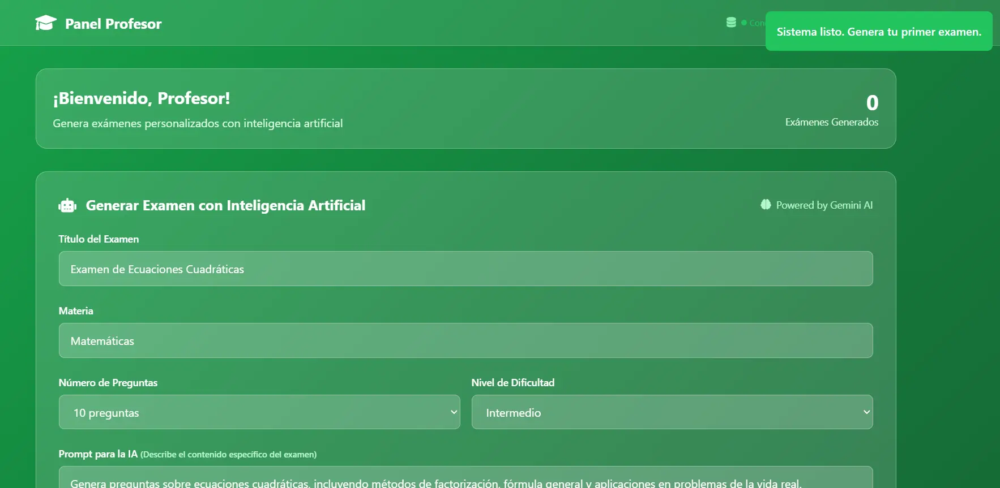
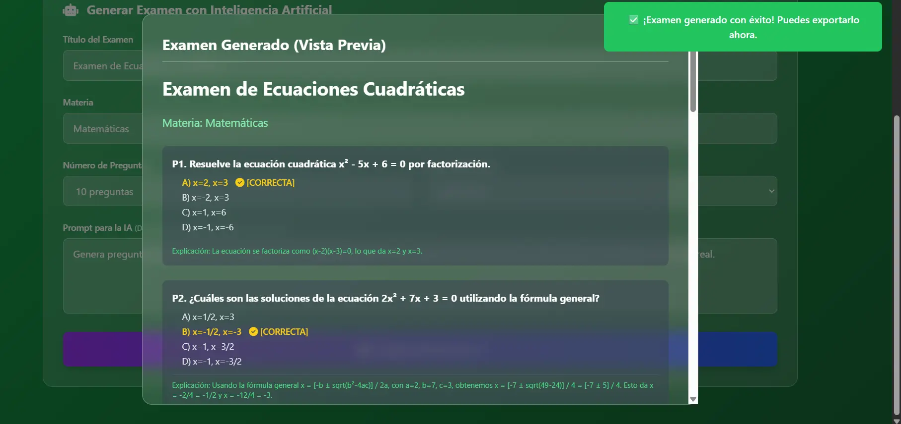

Proyecto Generador de examanes con IAG
¿Qué es este generador de examenes?
Este generador de examanes con IAG, es un proyecto el cual actualmente se encuentra en desarrollo, la idea principal de este proyecto es hacer un software dirigido a docentes de la Universidad de Colima con el cual ellos podrán generar dichos metódos de evaluación de una manera agil, cuando se genera el test, el docente puede publicarlo e invitar a los alumnos a utilizarlo
Objetivo del proyecto
El objetivo principal de este proyecto es aprender acerca de temas de inteligencia artificial, profundizar conocimientos en bases de datos y uso de APIS.
Detalles adicionales
De momento unicamente se tiene el producto minimo viable del software el cual es generar examenes, para probar el software en la parte inferior de la pagina encontrarás un botón que te va dirigir a dicha pagina, para probarla deberas seleccionar acceder como profesor e ingresar los siguientes datos: Correo: profesor@ucol.mx Contraseña: profesor123
Herramientas utilizadas:
Capturas del software:

